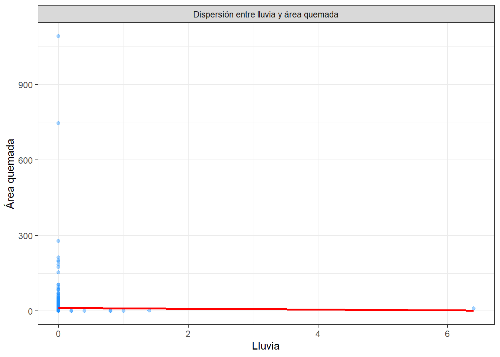
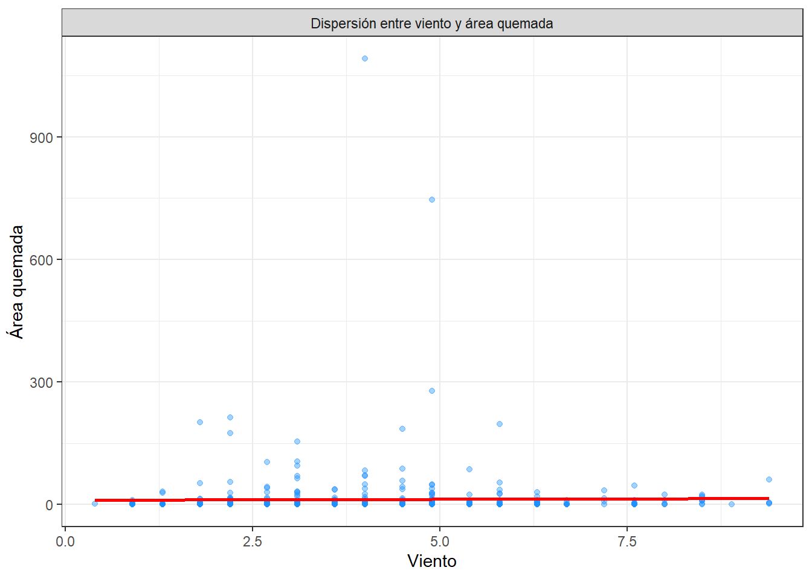
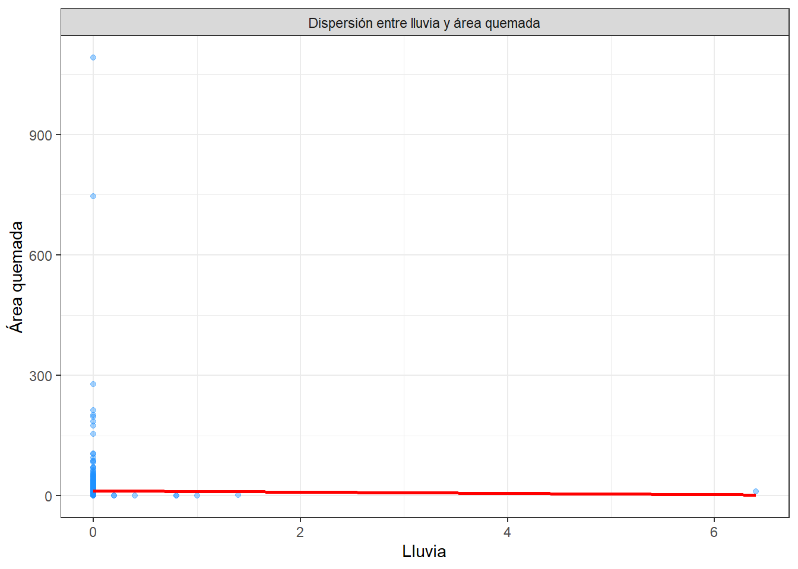
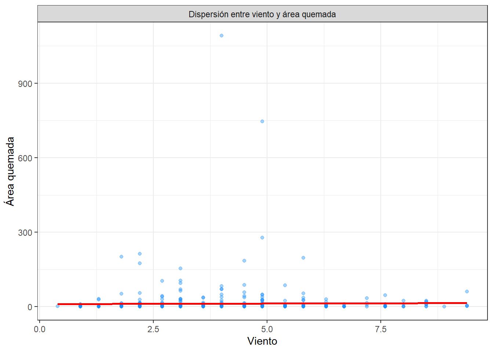

Chapter 3 Inferencial
3.1 Correlación y Kruskal-Wallis
Hagamos prueba de Kolmogorov_Smirnov a las variables numéricas para probar si siguen una distribución normal
vars <- c("area", "X", "Y", "FFMC", "DMC", "DC", "ISI", "temp", "RH", "wind", "rain")
ks_results <- lapply(vars, function(v) {
test <- ks.test(scale(df[[v]]), pnorm)
data.frame(
Variable = v,
D = round(test$statistic, 5),
p_value = format.pval(test$p.value, digits = 3, eps = .001),
Normalidad = ifelse(test$p.value > 0.05, "No se rechaza normalidad", "Se rechaza normalidad")
)
})## Warning in ks.test.default(scale(df[[v]]), pnorm): ties should not be present
## for the one-sample Kolmogorov-Smirnov test
## Warning in ks.test.default(scale(df[[v]]), pnorm): ties should not be present
## for the one-sample Kolmogorov-Smirnov test
## Warning in ks.test.default(scale(df[[v]]), pnorm): ties should not be present
## for the one-sample Kolmogorov-Smirnov test
## Warning in ks.test.default(scale(df[[v]]), pnorm): ties should not be present
## for the one-sample Kolmogorov-Smirnov test
## Warning in ks.test.default(scale(df[[v]]), pnorm): ties should not be present
## for the one-sample Kolmogorov-Smirnov test
## Warning in ks.test.default(scale(df[[v]]), pnorm): ties should not be present
## for the one-sample Kolmogorov-Smirnov test
## Warning in ks.test.default(scale(df[[v]]), pnorm): ties should not be present
## for the one-sample Kolmogorov-Smirnov test
## Warning in ks.test.default(scale(df[[v]]), pnorm): ties should not be present
## for the one-sample Kolmogorov-Smirnov test
## Warning in ks.test.default(scale(df[[v]]), pnorm): ties should not be present
## for the one-sample Kolmogorov-Smirnov test
## Warning in ks.test.default(scale(df[[v]]), pnorm): ties should not be present
## for the one-sample Kolmogorov-Smirnov test
## Warning in ks.test.default(scale(df[[v]]), pnorm): ties should not be present
## for the one-sample Kolmogorov-Smirnov testks_summary <- do.call(rbind, ks_results)
knitr::kable(ks_summary, caption = "Resumen del test de Kolmogorov–Smirnov para variables numéricas")| Variable | D | p_value | Normalidad | |
|---|---|---|---|---|
| D | area | 0.42003 | <0.001 | Se rechaza normalidad |
| D1 | X | 0.14293 | <0.001 | Se rechaza normalidad |
| D2 | Y | 0.19784 | <0.001 | Se rechaza normalidad |
| D3 | FFMC | 0.25180 | <0.001 | Se rechaza normalidad |
| D4 | DMC | 0.07529 | 0.00569 | Se rechaza normalidad |
| D5 | DC | 0.23135 | <0.001 | Se rechaza normalidad |
| D6 | ISI | 0.13232 | <0.001 | Se rechaza normalidad |
| D7 | temp | 0.05077 | 0.139 | No se rechaza normalidad |
| D8 | RH | 0.10619 | <0.001 | Se rechaza normalidad |
| D9 | wind | 0.09998 | <0.001 | Se rechaza normalidad |
| D10 | rain | 0.51370 | <0.001 | Se rechaza normalidad |
Ninguna de las variables numéricas independientes es normal, exceptuando temperatura. No podemos aplicar Pearson, ya que no cumplen con el supuesto de normalidad, por lo tanto, aplicamos una prueba no paramétrica de correlación, Spearman.
vars <- c("X", "Y", "FFMC", "DMC", "DC", "ISI", "temp","RH", "wind", "rain")
tabla_cor <- map_dfr(vars, function(v) {
test <- cor.test(df$area, df[[v]], method = "spearman")
tibble(
variable = v,
rho = test$estimate,
p_value = test$p.value
)
})## Warning in cor.test.default(df$area, df[[v]], method = "spearman"): Cannot
## compute exact p-value with ties
## Warning in cor.test.default(df$area, df[[v]], method = "spearman"): Cannot
## compute exact p-value with ties
## Warning in cor.test.default(df$area, df[[v]], method = "spearman"): Cannot
## compute exact p-value with ties
## Warning in cor.test.default(df$area, df[[v]], method = "spearman"): Cannot
## compute exact p-value with ties
## Warning in cor.test.default(df$area, df[[v]], method = "spearman"): Cannot
## compute exact p-value with ties
## Warning in cor.test.default(df$area, df[[v]], method = "spearman"): Cannot
## compute exact p-value with ties
## Warning in cor.test.default(df$area, df[[v]], method = "spearman"): Cannot
## compute exact p-value with ties
## Warning in cor.test.default(df$area, df[[v]], method = "spearman"): Cannot
## compute exact p-value with ties
## Warning in cor.test.default(df$area, df[[v]], method = "spearman"): Cannot
## compute exact p-value with ties
## Warning in cor.test.default(df$area, df[[v]], method = "spearman"): Cannot
## compute exact p-value with ties## # A tibble: 10 × 3
## variable rho p_value
## <chr> <dbl> <dbl>
## 1 temp 0.0787 0.0738
## 2 DMC 0.0719 0.102
## 3 rain -0.0641 0.146
## 4 DC 0.0616 0.162
## 5 X 0.0605 0.170
## 6 wind 0.0532 0.227
## 7 Y 0.0460 0.296
## 8 FFMC 0.0253 0.566
## 9 RH -0.0242 0.583
## 10 ISI 0.0125 0.777Los resultados del análisis de correlación de Spearman entre el área quemada y las variables independientes muestran coeficientes de correlación bajos en todos los casos, indicando relaciones débiles. Además, los p valor son mayores a 0.05 en todas las variables, lo que significa que ninguna correlación es estadísticamente significativa al 5%. La temperatura (rho = 0.0787, p = 0.0738) tiene el coeficiente más alto y el p valor más cercano a 0.05, pero sigue siendo débil. Esto sugiere que el área afectada por incendios no depende de manera directa o fuerte de ninguna de las variables analizadas.
Recordemos las gráficas de correlación


 

Aplicamos test no paramétrico de Kruskal-Wallis, para comparar área (numérica) con mes y día (categóricas)
##
## Kruskal-Wallis rank sum test
##
## data: area by month
## Kruskal-Wallis chi-squared = 23.723, df = 11, p-value = 0.01396##
## Kruskal-Wallis rank sum test
##
## data: area by day
## Kruskal-Wallis chi-squared = 1.1977, df = 6, p-value = 0.977pairwise.wilcox.test(x = datos$area,
g = datos$month,
exact = FALSE,
p.adjust.method = "bonferroni")##
## Pairwise comparisons using Wilcoxon rank sum test with continuity correction
##
## data: datos$area and datos$month
##
## apr aug dec feb jan jul jun mar may nov oct
## aug 1.000 - - - - - - - - - -
## dec 1.000 0.011 - - - - - - - - -
## feb 1.000 1.000 0.272 - - - - - - - -
## jan 1.000 1.000 1.000 1.000 - - - - - - -
## jul 1.000 1.000 0.025 1.000 1.000 - - - - - -
## jun 1.000 1.000 0.042 1.000 1.000 1.000 - - - - -
## mar 1.000 1.000 0.007 1.000 1.000 1.000 1.000 - - - -
## may 1.000 1.000 1.000 1.000 1.000 1.000 1.000 1.000 - - -
## nov 1.000 1.000 1.000 1.000 - 1.000 1.000 1.000 1.000 - -
## oct 1.000 1.000 0.607 1.000 1.000 1.000 1.000 1.000 1.000 1.000 -
## sep 1.000 1.000 0.155 1.000 1.000 1.000 1.000 1.000 1.000 1.000 1.000
##
## P value adjustment method: bonferroniLa prueba no paramétrica de Kruskal-Wallis se aplicó para evaluar si existían diferencias significativas en el área quemada entre los distintos meses y días. En el caso de los meses, sí existen diferencias estadísticamente significativas (p = 0.01396), lo que puede indicar que el área afectada por incendios varía según el mes del año. En cambio, para los días de la semana (p = 0.977), no se encontraron diferencias significativas. El análisis post-hoc con la prueba de Wilcoxon reveló que las diferencias más notorias se dan entre meses como diciembre y agosto, diciembre y julio, entre otros, lo que sugiere una posible influencia estacional (verano) sobre los incendios
Al encontrar esas posibles relaciones que llaman la atención, analizamos temperatura con meses
# Agrupación por "month"
agrup_month <- df %>%
group_by(month) %>%
summarise(n = length(area),
media = mean(area),
ds = sd(area),
mediana = median(area),
minimo = min(area),
maximo = max(area),
Q1 = quantile(area, 0.25),
Q3 = quantile(area, 0.75),
IQR = IQR(area)) %>%
mutate(variable = "month", niveles = as.character(month)) %>%
select(variable, niveles, everything(), -month)
g1 <- df %>%
ggplot(aes(x = month, y = area)) +
geom_boxplot(fill = "#87CEFA", outlier.colour = "red", outlier.shape = 16) +
stat_summary(fun = mean, geom = "point", shape = 18, size = 3, color = "darkblue") +
labs(x = "Mes del año", y = "Área quemada") +
theme_bw() +
facet_grid(.~"Distribución de área quemada por meses del año")agrup_day <- df %>%
group_by(day) %>%
summarise(n = length(area),
media = mean(area),
ds = sd(area),
mediana = median(area),
minimo = min(area),
maximo = max(area),
Q1 = quantile(area, 0.25),
Q3 = quantile(area, 0.75),
IQR = IQR(area)) %>%
mutate(variable = "day", niveles = as.character(day)) %>%
select(variable, niveles, everything(), -day)
g2 <- df %>%
ggplot(aes(x = day, y = area)) +
geom_boxplot(fill = "#87CEFA", outlier.colour = "red", outlier.shape = 16) +
stat_summary(fun = mean, geom = "point", shape = 18, size = 3, color = "darkblue") +
labs(x = "Días de la semana", y = "Área quemada") +
theme_bw() +
facet_grid(.~"Distribución de área quemada por día de la semana")df %>%
ggplot(aes(x = temp, y = area)) +
geom_point(alpha = 0.4, color = "#1E90FF") +
geom_smooth(method = "lm", formula = y ~ x, se = FALSE, color = "red") +
labs(x = "Temperatura",
y = "Área quemada"
) +
theme_bw()+
facet_grid(.~ "Dispersión entre temp y área quemada")agrup_month <- df %>%
group_by(month) %>%
summarise(n = length(temp),
media = mean(temp),
ds = sd(temp),
mediana = median(temp),
minimo = min(temp),
maximo = max(temp),
Q1 = quantile(temp, 0.25),
Q3 = quantile(temp, 0.75),
IQR = IQR(temp)) %>%
mutate(variable = "month", niveles = as.character(month)) %>%
select(variable, niveles, everything(), -month)
g1 <- df %>%
ggplot(aes(x = month, y = temp)) +
geom_boxplot(fill = "#87CEFA", outlier.colour = "red", outlier.shape = 16) +
stat_summary(fun = mean, geom = "point", shape = 18, size = 3, color = "darkblue") +
labs(x = "Mes del año", y = "Temperatura") +
theme_bw() +
facet_grid(.~"Distribución de temperatura por meses del año")
g1Hagamos Kruskal-Wallis entre temperatura y meses
##
## Kruskal-Wallis rank sum test
##
## data: temp by month
## Kruskal-Wallis chi-squared = 208.69, df = 11, p-value < 2.2e-16## Warning in wilcox.test.default(xi, xj, paired = paired, ...): cannot compute
## exact p-value with ties
## Warning in wilcox.test.default(xi, xj, paired = paired, ...): cannot compute
## exact p-value with ties
## Warning in wilcox.test.default(xi, xj, paired = paired, ...): cannot compute
## exact p-value with ties
## Warning in wilcox.test.default(xi, xj, paired = paired, ...): cannot compute
## exact p-value with ties
## Warning in wilcox.test.default(xi, xj, paired = paired, ...): cannot compute
## exact p-value with ties
## Warning in wilcox.test.default(xi, xj, paired = paired, ...): cannot compute
## exact p-value with ties
## Warning in wilcox.test.default(xi, xj, paired = paired, ...): cannot compute
## exact p-value with ties
## Warning in wilcox.test.default(xi, xj, paired = paired, ...): cannot compute
## exact p-value with ties
## Warning in wilcox.test.default(xi, xj, paired = paired, ...): cannot compute
## exact p-value with ties
## Warning in wilcox.test.default(xi, xj, paired = paired, ...): cannot compute
## exact p-value with ties
## Warning in wilcox.test.default(xi, xj, paired = paired, ...): cannot compute
## exact p-value with ties
## Warning in wilcox.test.default(xi, xj, paired = paired, ...): cannot compute
## exact p-value with ties
## Warning in wilcox.test.default(xi, xj, paired = paired, ...): cannot compute
## exact p-value with ties
## Warning in wilcox.test.default(xi, xj, paired = paired, ...): cannot compute
## exact p-value with ties
## Warning in wilcox.test.default(xi, xj, paired = paired, ...): cannot compute
## exact p-value with ties
## Warning in wilcox.test.default(xi, xj, paired = paired, ...): cannot compute
## exact p-value with ties
## Warning in wilcox.test.default(xi, xj, paired = paired, ...): cannot compute
## exact p-value with ties
## Warning in wilcox.test.default(xi, xj, paired = paired, ...): cannot compute
## exact p-value with ties
## Warning in wilcox.test.default(xi, xj, paired = paired, ...): cannot compute
## exact p-value with ties
## Warning in wilcox.test.default(xi, xj, paired = paired, ...): cannot compute
## exact p-value with ties
## Warning in wilcox.test.default(xi, xj, paired = paired, ...): cannot compute
## exact p-value with ties
## Warning in wilcox.test.default(xi, xj, paired = paired, ...): cannot compute
## exact p-value with ties
## Warning in wilcox.test.default(xi, xj, paired = paired, ...): cannot compute
## exact p-value with ties
## Warning in wilcox.test.default(xi, xj, paired = paired, ...): cannot compute
## exact p-value with ties
## Warning in wilcox.test.default(xi, xj, paired = paired, ...): cannot compute
## exact p-value with ties
## Warning in wilcox.test.default(xi, xj, paired = paired, ...): cannot compute
## exact p-value with ties
## Warning in wilcox.test.default(xi, xj, paired = paired, ...): cannot compute
## exact p-value with ties
## Warning in wilcox.test.default(xi, xj, paired = paired, ...): cannot compute
## exact p-value with ties
## Warning in wilcox.test.default(xi, xj, paired = paired, ...): cannot compute
## exact p-value with ties
## Warning in wilcox.test.default(xi, xj, paired = paired, ...): cannot compute
## exact p-value with ties
## Warning in wilcox.test.default(xi, xj, paired = paired, ...): cannot compute
## exact p-value with ties##
## Pairwise comparisons using Wilcoxon rank sum test with continuity correction
##
## data: df$temp and df$month
##
## jan feb mar apr may jun jul aug sep
## feb 1.00000 - - - - - - - -
## mar 1.00000 0.09200 - - - - - - -
## apr 1.00000 1.00000 1.00000 - - - - - -
## may 1.00000 1.00000 1.00000 1.00000 - - - - -
## jun 1.00000 0.00018 0.00010 0.05452 1.00000 - - - -
## jul 1.00000 7.9e-07 2.0e-09 0.00543 1.00000 1.00000 - - -
## aug 1.00000 1.9e-10 < 2e-16 0.00046 1.00000 1.00000 1.00000 - -
## sep 1.00000 8.1e-10 < 2e-16 0.00181 1.00000 1.00000 0.22226 0.00173 -
## oct 0.97059 0.00071 0.00695 0.30379 1.00000 1.00000 0.05236 0.00417 0.59480
## nov 1.00000 1.00000 1.00000 1.00000 1.00000 1.00000 1.00000 1.00000 1.00000
## dec 1.00000 0.08335 0.00012 0.02450 1.00000 0.00263 0.00040 2.9e-05 2.9e-05
## oct nov
## feb - -
## mar - -
## apr - -
## may - -
## jun - -
## jul - -
## aug - -
## sep - -
## oct - -
## nov 1.00000 -
## dec 0.00405 1.00000
##
## P value adjustment method: bonferroniLa prueba entre la temperatura y los meses del año muestra un resultado significativo, lo que indica que existen diferencias en la distribución de la temperatura a lo largo de los meses. El análisis post hoc muestra que hay diferencias especialmente entre los meses de verano y los de invierno. Esto nos dice que podría haber un patrón estacional que afecta el área de incendios.
3.2 Conclusión inferencial
En conclusión, la correlación entre el área quemada y la temperatura resultó positiva pero débil, lo que indica que, aunque a mayores temperaturas puede aumentar el área afectada, existen otros factores que influyen en la extensión del incendio. Además, parece haber una relación entre la temperatura y los meses del año, sin embargo, no podemos concluir relaciones concretas ya que no hay ninguna con una significancia lo suficientemente alta. Finalmente, el diagrama de caja y bigotes entre el área quemada y los meses del año muestra que la mayor variabilidad y magnitud de áreas quemadas se concentra en ciertos meses específicos, reflejando una posible influencia estacional en la ocurrencia y severidad de los incendios forestales.